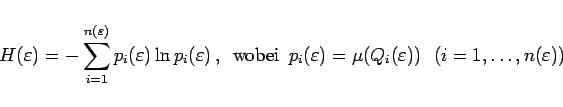
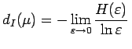
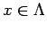
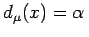
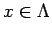
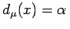
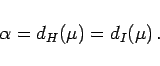

Inhalt Index DeskTop Bronstein

 Dynamische Systeme und Chaos Quantitative Beschreibung von Attraktoren Dimensionen Auf invariante Maße zurückgehende Dimensionen
Dynamische Systeme und Chaos Quantitative Beschreibung von Attraktoren Dimensionen Auf invariante Maße zurückgehende Dimensionen


Der Attraktor  von
von  sei wie bei der Einführung der metrischen Entropie mit Würfeln
sei wie bei der Einführung der metrischen Entropie mit Würfeln  der Seitenlänge
der Seitenlänge  überdeckt. Sei
überdeckt. Sei  ein invariantes Wahrscheinlichkeitsmaß auf
ein invariantes Wahrscheinlichkeitsmaß auf  .
.
Die Entropie der Zerlegung  ist
ist
|  | (17.44) |
gesetzt wurde. Existiert der Grenzwert , so hat diese Größe die Eigenschaft einer Dimension und wird Informationsdimension genannt.
Satz II von Young: Gilt für  -fast alle  die Beziehung , so ist
-fast alle  die Beziehung , so ist
|  | (17.45) |
| Beispiel A |
|
Das Maß |
| Beispiel B |
|
Das Maß |